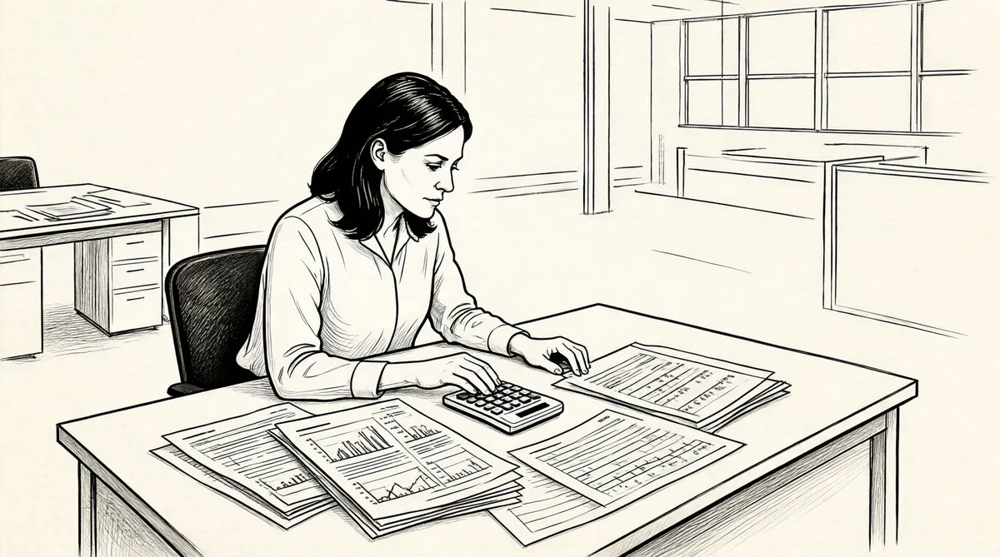

第25章 风车战争

20世纪50年代末60年代初，巴菲特完成了和桑伯恩公司的角力，巩固了合伙公司，并且和他的父亲一起搬进了新办公室。接着，他又开始着手另一个项目，这次又是在和奥马哈有点儿距离的地方。而这是他第一次真正掌控一家公司，远比桑伯恩地图公司消耗了他更多的时间和精力。
丹普斯特磨坊制造公司位于内布拉斯加州比阿特利斯，是一个家族运营的公司，专门制造风车和灌溉系统。
巴菲特职业生涯中的这个故事，起初就像是又一台投入25美分可以吐出1美元的老虎机。股票售价为18美元一股，而公司稳步增长的账面价值为72美元一股。丹普斯特的资产就是风车、灌溉设备以及它自己的制造工厂。
1958年，沃伦开车去过比阿特利斯。那是一个暴风肆虐的草原小镇，可以依靠的就是丹普斯特这个唯一的雇主。他带了一张写有19个问题的清单，比如：“公司有多少经销商？”“在大萧条期间，坏账情况如何？”1参观过后他的结论是，这家公司“有钱，不过不挣钱”。2总裁克莱德·丹普斯特正把公司弄得一团糟。3
因为丹普斯特就是另外一个“烟蒂”，所以沃伦应用了他的“烟蒂”技巧,只要它以低于账面价值的价格出售,就不断买入。如果价格因某种原因上升，他就能出售获利。如果价格不上升，他会在拥有了足够控制这家公司的股票后停止购买，他可以通过变现，也就是清算资产而获利。4
和桑伯恩公司一样，巴菲特负担不起他想要的丹普斯特股票。于是，他打电话给沃尔特·施洛斯和汤姆·纳普：“我希望你们跟着我干这第三次。”5经过几年，这个三人组控制了11%的公司股票，仅次于丹普斯特家族，而且沃伦还进入了董事会。1960年年初，董事会聘用了李·戴蒙担任公司总经理，他是明尼阿波利斯模塑公司的前采购经理。6巴菲特策略性地把克莱德·丹普斯特变成了一个有名无实的老板，并且继续购买股票。7他想要他能得到的每一股股票。他打电话给纽约的沃尔特·施洛斯：“沃尔特，我想买你的股票。”
“哦，我不想卖给你。”施洛斯说，“你知道，它是个不错的小公司。”
“你看，我为这个主意做了所有的工作。我想要你的股票。”巴菲特说。
“沃伦，你是我的朋友。如果你真想要——拿走吧。”施洛斯回答。8
在这个骑着多丽丝的自行车逃跑的成人版里，巴菲特拿走了施洛斯的股票。他有一个弱点：如果他觉得自己需要什么东西，他就真的需要，而且这个需要必须得到满足。但是，他做这些的时候，没有明显的恶意或者傲慢。如果有什么的话，反而是相反的情况；他只是非常需要。像施洛斯这样的人一般都会向他屈服，因为他们喜欢他。另外，无论他想要什么，他看起来显然觉得自己比他们更需要。
在获取更多股票的同时，巴菲特也买下了丹普斯特家族的所有股份。通过那次交易，他取得了控制权，体面地打发了克莱德·丹普斯特，并且以30.25美元一股的相同条件对其他所有股东提出收购要约。9
巴菲特做得非常狡猾巧妙。他觉得，自己在买股票的时候，不能就这样催促其他投资者去卖。甚至他会卖力地警告他们，他认为丹普斯特股票未来的表现会很好。虽然这样，但是金钱和人的天性会起到应该起到的作用。人们让自己相信，与其拿着交易清淡、价值可疑的股票，不如直接换成现金。很快，“烟蒂”股票占到合伙公司资产的21%。
1961年7月，沃伦写信告诉他的合伙人们，合伙公司已经投资了一家匿名公司，这家公司“会妨碍合伙公司短期的业绩表现，但能强力保证几年以后的最佳结果”。10在1962年1月写给股东们的信中，他点出了合伙公司已经控制的丹普斯特公司的名字，并且小小地说教了一番，解释了格雷厄姆的“烟蒂”哲学。11信中写道：“丹普斯特过去挣了不少钱，但目前只是盈亏平衡……我们小数额持续购买这只股票已经5年了。这期间，大部分时间我是一个董事。可在目前的管理下，对这家公司的赢利前景，我的感觉慢慢地不再像之前那么好了。然而，我也更加熟悉这儿的资产和运作，以量化因素为依据的评估结论维持良好。”这样的看法促使他继续购买股票。事实证明，以前所写的“会妨碍合伙公司短期的业绩表现”比他期望的更有先见之明。
1962年，巴菲特在一旁辅导李·戴蒙，并且努力向他解释该怎样管理存货。可是戴蒙好像认为，无论丹普斯特卖出多少风车，他都可以不停地购买风车的配件。当过采购经理，他知道如何去买，而且也这么做了。就在丹普斯特吞噬现金的同时，仓库里堆满了风车的配件。121962年年初，这家公司的贷款银行准备拿这些存货作为贷款抵押品，这足以给丹普斯特敲响警钟。而且，各种要关闭丹普斯特的议论纷至沓来。
在公司完全陷落之前的几个月，巴菲特还在观察。因此，现在他不得不向合伙人汇报，他投入了100万美元的公司就要破产了。他试图招募他在哥伦比亚的老朋友鲍勃·邓恩辞去美国钢铁公司的工作，搬到比阿特利斯来管理丹普斯特公司。邓恩真的过来了一趟，但是最终并不感兴趣。巴菲特很少向别人请教建议，不过最后，在那年的4月，和苏珊去洛杉矶时，他和芒格讨论了这个情况。
“我和苏珊将与格雷厄姆夫妇、芒格夫妇共进晚餐，地点是洛杉矶埃尔塞贡多的船长桌子餐厅。我告诉查理，‘这个公司现在一团糟，我弄了个笨蛋来管理丹普斯特，公司存货还在不断上升、上升。’”芒格平时也帮他的法律客户分析生意，他像一个经理人一样想了想，立刻说：“我知道一个人，他经常处理这种棘手的情况。哈里·波特尔。”他是通过一个专门从事业务扭转的熟人认识波特尔的。
6天以后，受到5万美元签约奖金的诱惑，哈里·波特尔来到了比阿特利斯。这意味着第二次——算上那母亲般的秘书——巴菲特不得不炒掉某人。他已经从以前的经历中知道，自己憎恨解雇别人。不只这些，由于丹普斯特公司是这儿唯一一家大企业，他已经从董事会听说，戴蒙被任命为总经理后，他的妻子已经自诩为比阿特利斯的王后了。
巴菲特害怕冲突。他的第一本能是避免冲突发生，而且如果有人以他母亲那种方式威胁他，他会像一个被烫的小猫那样跑掉。不过面对可能爆发的冲突，他已经学会保持情绪不受影响了。他认为，这种做法“会在你周围制造出一个有关这个情况的壳，而不是创造出让你超越这种情况的壳”，会阻碍你成为一个有经验的人。
不管他解雇戴蒙时发生了什么，后来戴蒙的妻子写信给沃伦，信中责怪他“粗鲁且不道德”，而且由于他的冷漠，她丈夫的自信心被摧毁了。32岁的巴菲特还没有学会富有同情心地解雇别人。
没过几天，他派他的新雇员比尔·斯科特去比阿特利斯协助哈里·波特尔，他们四处翻检配件部门，以决定哪些该丢掉，哪些要重新定价。13他们像一窝棉子象鼻虫一样横扫而过，削减库存，廉价出清设备，关闭了5个分支机构，提高维修零部件的价格，关闭不能产生利润的生产线。他们解雇了100个人。紧接着，外来的新管理层大规模收缩业务，这激起了比阿特利斯的人用不信任的眼光看待巴菲特，怀疑他是一个无情的清算人。
到1962年年底，波特尔已经将丹普斯特公司拖了回来。在1963年1月写给合伙人的信中，巴菲特称丹普斯特公司为这一年的高潮，并且命名波特尔为年度人物。14他估计公司价值现在为每股51美元，而上一年为每股35美元。银行非常高兴，由于出售资产，削减库存，丹普斯特公司积累了大约200万美元的现金，相当于每股15美元。同时，巴菲特还借了钱——每股20美元以筹集资金投资。这样，丹普斯特公司的证券投资组合规模就和巴菲特合伙公司的一样了。
现在巴菲特面临一个类似桑伯恩公司的问题。更具讽刺意味的是，他也变成了那些喜欢贮藏现金的管理者之一。市场已经从1962年6月的低点开始反弹。为了利用丹普斯特公司额外的资金，他派波特尔和斯科特去纽约州北部地区看一家叫椭圆木碟公司的制造工厂，这个工厂生产冰棒杆、木头勺子等产品，但是最终并没有买下。15巴菲特试图私下出售丹普斯特公司，却发现没有人愿意接受他的价格，于是8月份他通知股东们准备出售公司，并且在《华尔街日报》上刊登了广告：
出售利润丰厚的制造公司
……我公司是一家领先的农具、施肥设备以及灌溉系统制造商。作为一个赢利的企业，丹普斯特将在1963年9月30日公开出售，视截至1963年9月13日的协商交易情况而定……
联系人：哈里·波特尔先生（公司总裁）
在公开拍卖之前，他给了买家一个月的时间出价。而且，他和大多数明显的候选人都已经说了这个情况。
一想到新的拥有者可能会对这家最大，事实上也是唯一的一家企业实施裁员或者关闭分厂，比阿特利斯的人就气疯了。工厂开张于战后急速发展时期，大萧条时也没有关门。大萧条结束还不到25年，大规模失业的前景带来了一直萦绕于心的记忆：脸色苍白的男子、穿着补丁衣服的流浪汉、全国1/4的人失业、因饥饿而导致的营养不良、屈辱地干着政府提供的打发空闲的工作。
比阿特利斯的人们拔出了干草叉，16巴菲特震惊了。他拯救了一个濒死的公司，难道他们不明白这一点吗？如果没有他，丹普斯特公司早就破产了。（就像巴菲特的继任者，丹普斯特公司董事长麦卡锡总结的：“我们理解你，但比阿特利斯的一些人并没有认识到，你和哈里为丹普斯特公司完成了一项好的、有必要的工作。”）17他从没预料到会有凶猛狂暴的行为，也没有想过人们会憎恨他。
全镇的人发起运动反对巴菲特，他们筹集了将近300万美元以保证公司所有权仍然留在比阿特利斯。（整个280万美元的融资中，175万美元将用来支付给卖方，剩余的用来扩张经营。）18每一天，《比阿特利斯每日太阳报》屏住呼吸倒数截止日期，而整个镇子都在努力拯救这里唯一的工厂。截止日期这一天，当镇长走向麦克风宣布巴菲特被击败，公司创始人的孙子查尔斯·丹普斯特带领一个保证工厂继续开张的投资集团赢了19，此时全镇火警笛和钟声齐鸣。现在现金到手，巴菲特给他的股东们分配了超过200万美元。20但是，这段经历把他吓坏了。面对憎恨，他没有变得坚韧，反而发誓再也不会让此类事件重演。他可受不了一个镇子的人都恨他。
不久后的一天，巴菲特给沃尔特·施洛斯打电话：“你知道，沃尔特，我在5家不同的公司里有一些小额头寸，我想把它们全部卖给你。”这5家公司是杰多–高地煤炭公司、商业国民财产公司、佛蒙特州大理石公司、杰纳西–怀俄明铁路公司，还有一个名字已经因时间久远而失传了。“好，你想要什么价，沃伦？”施洛斯问。“我将以现价卖给你。”巴菲特说。“好的，我买了。”施洛斯立刻回答。
“我没有说，‘嗯，你知道，你需要查一下每只股票看看究竟值多少钱’，”施洛斯说，“我信任沃伦，如果我说，‘好，我以你现价的90%来买’，沃伦也许就会说，‘忘了这回事吧！’我帮了他一个忙，现在他也想帮我一个忙。如果他还获了利，那么也不错。事实上，它们最后的结果都很不错。我认为这就是他说‘谢谢你’的方式，因为‘你’卖给我‘你’的丹普斯特股票。我不会说那就是理由，不过那确实是我想要说的意思，要做一个诚实的人。”